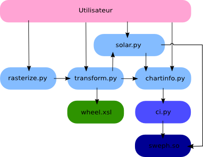

AstroWS
AstroWS is a set of REST web services about astrology.
Overview

Services
chartinfo.py
Description
Returns houses, bodies positions, aspects and conjunctions for a given place and datetime.
Arguments
- lat (decimal)
- Birth place latitude. Exemple: 43.07
- lon (decimal)
- Birth place longitude. Exemple: 5.55
- year (integer)
- Year of birth. Exemple: 1984
- month (integer)
- Month of birth. Exemple: 06
- day (integer)
- Day of birth. Exemple: 08
- time (double)
- Hour of birth. Exemple: 15.25 (means 15:15)
- hsys (character)
- House system. Possible values:
- P
- Placidus
- K
- Koch
- O
- Porphyrius
- R
- Regiomontanus
- C
- Campanus
- A or E
- Equal (cusp 1 is Ascendant)
- V
- Vehlow equal (Asc. in middle of house 1)
- W
- Whole sign
- X
- axial rotation system
- H
- azimuthal or horizontal system
- T
- Polich/Page ('topocentric' system)
- B
- Alcabitus
- M
- Morinus
- U
- Krusinski-Pisa
- G
- Gauquelin sectors
- display (integer list)
- Celestial bodies to display. Exemple: 0,1,2,3. Comma separated list of these values:
- 0
- Sun
- 1
- Moon
- 2
- Mercury
- 3
- Venus
- 4
- Mars
- 5
- Jupiter
- 6
- Saturn
- 7
- Uranus
- 8
- Neptune
- 9
- Pluto
- 10
- MeanNode
- 11
- TrueNode
- 12
- MeanApogee
- 13
- OscuApogee
- 14
- Earth
- 15
- Chiron
- 16
- Pholus
- 17
- Ceres
- 18
- Pallas
- 19
- Juno
- 20
- Vesta
- 21
- InterpretedApogee
- 22
- InterpretedPerigee
- 23
- MeanSouthNode
- 24
- TrueSouthNode
Exemple call
chartinfo.py?name=Jean-André Santoni&city=Ollioules&lat=43&lon=5&year=1984&month=6&day=8&time=13.25&hsys=G&display=0,1,2,3,4,5,6,7,8,9,10,12,23
transform.py
Description
XSLT processor, used to generate SVG natal chart from chartinfo.py output.
Arguments
- xml (url)
- URL of the XML file to tranform. Must be URL encoded. Exemple: http%3A%2F%2Fastro.kivutar.me%2Fchartinfo.py%3Flat%3D17.9970194353704%26lon%3D-76.7935752868652%26year%3D1945%26month%3D6%26day%3D02%26time%3D6.75%26hsys%3DE%26display%3D0%2C1%2C2%2C3%2C4%2C5%2C6%2C7%2C8%2C9%2C10%2C12%2C23
- xsl (url)
- URL of the XSL file. Must be URL encoded too. Exemple: wheel.xsl
Exemple call
transform.py?xml=http%3A%2F%2Fastro.kivutar.me%2Fchartinfo.py%3Flat%3D17.9970194353704%26lon%3D-76.7935752868652%26year%3D1945%26month%3D6%26day%3D02%26time%3D6.75%26hsys%3DE%26display%3D0%2C1%2C2%2C3%2C4%2C5%2C6%2C7%2C8%2C9%2C10%2C12%2C23&xsl=wheel.xsl
rasterize.py
Description
SVG to PNG converter.
Arguments
- svg (url)
- URL of the SVG file to convert. Must be URL encoded. Exemple: http://www.croczilla.com/svg/samples/lion/lion.svg
Exemple call
rasterize.py?svg=http://www.croczilla.com/svg/samples/lion/lion.svg
Frontend
We provide an xHTML form at gui/form.html as frontend to AstroWS.
{kind=link}